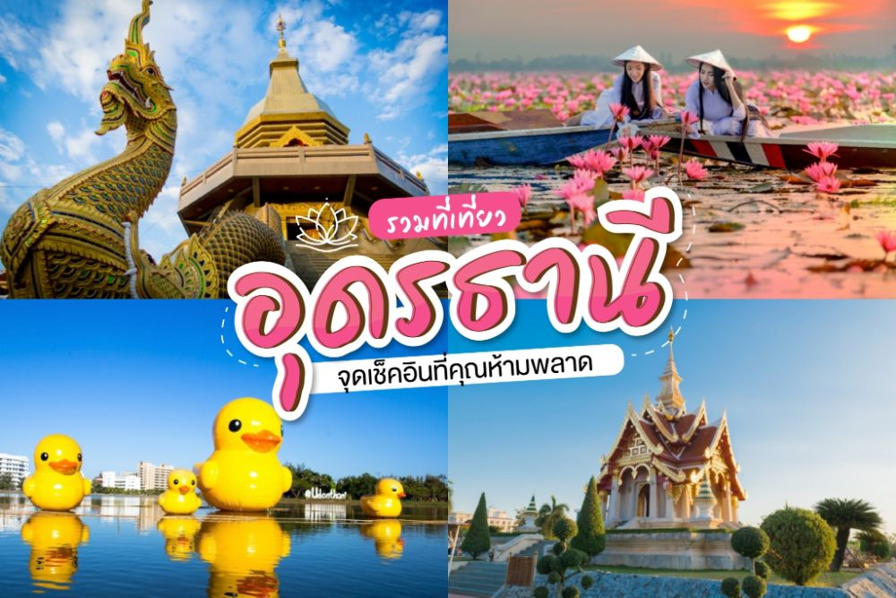
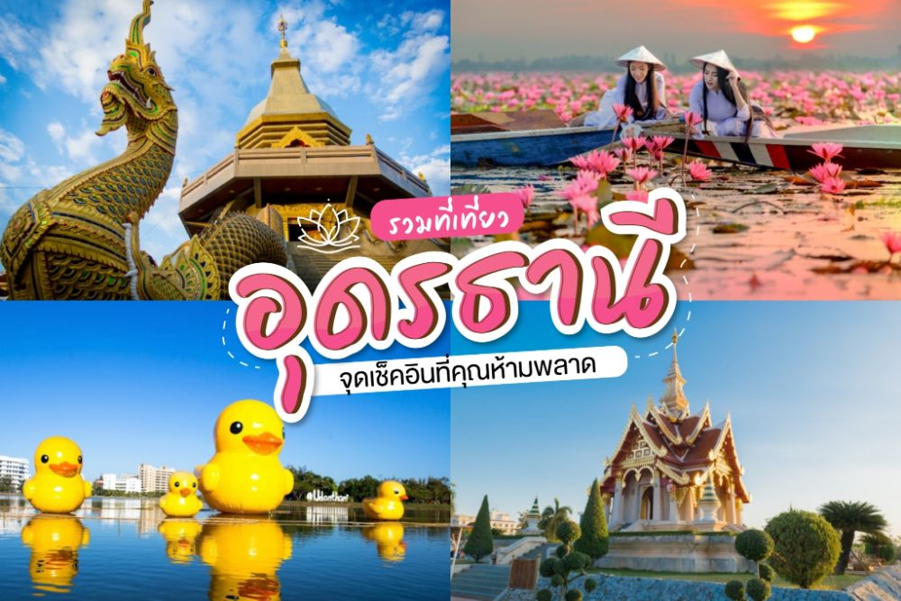

ท่องเที่ยวอุดรธานี
วันที่: 25 ธันวาคม 2567
อุดรธานีเป็นจังหวัดที่มีสถานที่ท่องเที่ยวที่สวยงามและมีเอกลักษณ์ เหมาะสำหรับการท่องเที่ยวเชิงธรรมชาติและวัฒนธรรม
สถานที่ที่ได้รับความนิยม เช่น ทะเลบัวแดง คำชะโนด และพิพิธภัณฑ์เมืองอุดรธานี
วันที่: 25 ธันวาคม 2567
อุดรธานีเป็นจังหวัดที่มีสถานที่ท่องเที่ยวที่สวยงามและมีเอกลักษณ์ เหมาะสำหรับการท่องเที่ยวเชิงธรรมชาติและวัฒนธรรม
สถานที่ที่ได้รับความนิยม เช่น ทะเลบัวแดง คำชะโนด และพิพิธภัณฑ์เมืองอุดรธานี